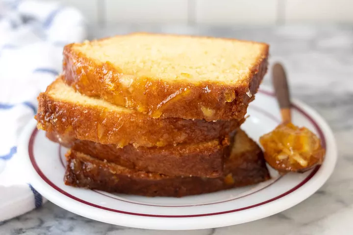

Marmalade Pound Cake Recipe

Description
This cake is moist and rich—but not so rich that you couldn't take it to work
as a perfectly respectable afternoon snack. The citrus flavor is just amazing,
soft, and so very pleasant, like waking up from a good nap and feeling the
afternoon sunshine on your face.
Ingredients
- 1 1/2 cups (340 g) unsalted butter, at room temperature, plus more for pans
- 3 cups (360 g) all-purpose flour, plus more for pans
- 2 1/2 cups (495 g) granulated sugar
- 2 tablespoons grated orange zest, from 2 large oranges
- 8 large eggs, at room temperature
- 1/3 cup (80 ml) marmalade
- 1 tablespoon vanilla extract
- 1 1/2 teaspoons baking powder
- 1 teaspoon salt
Method
- Butter and lightly flour two 8 x 4-inch loaf pans. (Alternatively, line your pans with a parchment paper sling and spray all sides with cooking spray.)
- Using a stand mixer fitted with the paddle attachment, cream the butter, sugar, and orange zest together for 3 to 4 minutes, or until fluffy.
- Break the eggs into a spouted measuring cup. With the mixer running on a moderate speed, add the eggs, one at a time. When the eggs are incorporated, add the marmalade and vanilla and beat them in.
- In a medium mixing bowl, whisk together the flour, baking powder, and salt. Add the flour mixture to the batter and mix just until combined, stopping to scrape down the sides of the bowl with a silicone spatula, as needed. Remove the bowl from the mixer and stir a few times to ensure that the flour from the edges of the bowl and any runnier batter from the bottom are all blended in.
- Divide the batter evenly between the 2 prepared pans and smooth the tops. Place on a baking sheet (to make it easier to move them around). Bake the cakes for 35 minutes.When the time is up, rotate the pans 180° so that the cakes bake evenly. Continue to bake until a cake tester comes out mostly clean from the center of a cake (a few crumbs are okay), another 30 to 35 minutes.
- In a small pan, combine the powdered sugar, marmalade, and water. Place over medium heat and warm until everything melts together.
- Remove the pans from the oven and place them on a wire rack set over a baking sheet. Let them cool for 10 to 15 minutes and then remove the cakes from the pans.